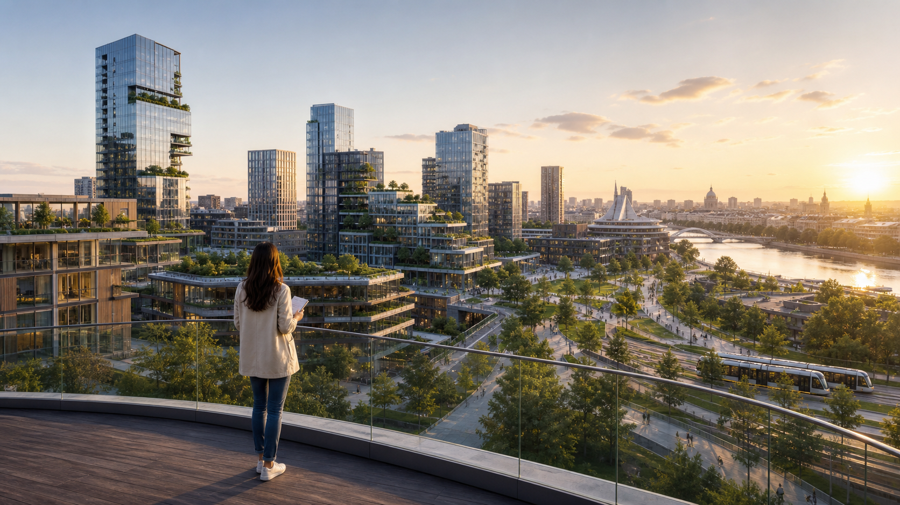

Un jurnalist de la o revistă de arhitectură discută cu Elena, o arhitectă la început de drum.
Legătură cu lecția 12: planuri personale, carieră, studii, călătorii, obiective și echilibru.
| Cuvânt / expresie | Explicație simplă | Exemplu |
|---|---|---|
| a-și propune | a decide să atingă un obiectiv | Îmi propun să conduc un proiect. |
| specializare | domeniu studiat în profunzime | Voi face o specializare în urbanism. |
| clădire sustenabilă | clădire cu impact redus asupra mediului | Proiectăm o clădire sustenabilă. |
| spațiu public | loc accesibil tuturor | Orașul are nevoie de spații publice verzi. |
| a coordona | a organiza activitatea unei echipe | Elena va coordona arhitecții. |
Andrei: Elena, bun venit la revista Arhitectura de mâine! Când ai decis că vrei să devii arhitectă?
Elena: Mulțumesc! Am luat această decizie în liceu. Îmi plăcea să desenez, dar voiam și să găsesc soluții practice pentru oameni. Acum lucrez într-un birou care proiectează locuințe și spații publice.
Andrei: La ce proiect lucrezi în prezent?
Elena: Lucrez la un cartier mic, aproape de un râu. Va avea clădiri eficiente energetic, multe zone verzi, piste pentru biciclete și transport electric. Ne dorim ca oamenii să poată ajunge ușor la școală, la serviciu și în parc.
Andrei: Care este obiectivul tău principal pentru anul viitor?
Elena: Intenționez să urmez un curs internațional de arhitectură sustenabilă. Cursul va dura șase luni. În același timp, voi continua să lucrez, așa că va trebui să-mi organizez foarte bine timpul.
Andrei: Ai de gând să lucrezi și în străinătate?
Elena: Da. Peste doi ani, mi-ar plăcea să petrec câteva luni în Danemarca sau în Țările de Jos. Vreau să observ cum sunt create orașele în care oamenii merg mai mult pe jos sau cu bicicleta. Apoi voi aduce ideile potrivite în proiectele din România.
Andrei: Unde te vezi peste cinci ani?
Elena: Sper să coordonez o echipă internațională și să proiectez un centru cultural într-un oraș modern. Îmi propun să creez clădiri frumoase, accesibile și utile comunității. Nu vreau însă doar o carieră bună. Voi păstra timp pentru familie, prieteni, sport și călătorii.
Andrei: Ce dificultăți anticipezi?
Elena: Uneori proiectele sunt scumpe, iar schimbările apar lent. În plus, o echipă mare are opinii diferite. Va fi important să ascult, să explic clar și să găsesc soluții împreună cu ceilalți.
Andrei: Ce sfat le-ai da tinerilor care au un vis profesional?
Elena: Să transforme visul într-un plan concret: ce vor să învețe, când vor începe și cine îi poate ajuta. Planurile se pot schimba, dar primul pas trebuie făcut acum.
Andrei: Îți mulțumesc. Sper să vedem curând orașul imaginat de tine!
Elena: Și eu sper. Mulțumesc pentru invitație!
| Afirmație | A / F | Corectare |
|---|---|---|
| Elena dorește un oraș în care oamenii folosesc doar mașina. | ||
| Va renunța la serviciu în timpul cursului. | ||
| Vrea să aducă în România idei potrivite din alte țări. | ||
| Pentru Elena, succesul înseamnă numai carieră. |
Găsește în interviu câte un exemplu pentru fiecare structură.
Jurnalistul îți pune întrebări. Răspunde ca Elena sau schimbă unele planuri și creează propria versiune a personajului.
Pregătește răspunsuri despre:
Folosește minimum patru: voi…, vreau să…, intenționez să…, am de gând să…, îmi propun să…, sper să…, mi-ar plăcea să…
Lucrezi pentru revista Arhitectura de mâine. Pregătește un interviu clar și interesant.
Poți întreba:
Adaugă două întrebări proprii și cere detalii prin: De ce? Cum? Puteți da un exemplu?